Una sola plataforma base que cada empresa configura según su nicho, su tamaño y cuánta IA quiere usar.
KonectusPropuesta
03 · Propuesta
Núcleo + IA opcional + módulos + plantillas
4 · Plantillas por nichoCooperativa · Colegio · E-commerce · Clínica · Agencia · Solo mensajería
3 · Módulos que se activanVentas · Recaudo · PQRS · Tickets · Citas · Campañas · Portal · VoIP
2 · Capa de IA opcionalManual · Asistido · Copiloto · Autónomo, elegido por módulo
1 · Núcleo para todosCanales · Bandeja · Mi día · Contactos · Registros con etapas · Reglas · Analítica · Permisos · API
Mismo producto y mismo código para todos: solo cambia la configuración. Una empresa pequeña nunca ve pantallas de empresa grande; si crece, activa lo siguiente.
KonectusPropuesta
03 · Propuesta
B2C y B2B: un producto, dos puertas de entrada
Puerta 1 · Autoservicio global
Puerta 2 · Nichos con plantilla
Cliente
Pymes B2C y B2B de cualquier país: tiendas, servicios, agencias pequeñas
Bandeja omnicanal, Mi día, IA, embudo y tickets simples
Un resultado: % recuperado, PQRS a tiempo, menos call center
Cómo se vende
Prueba gratis y alta en minutos, sin hablar con nadie
Venta consultiva y piloto medido
Precio de referencia
USD 20–60 por usuario al mes
USD 500–5.000 por cuenta al mes, o por resultado
Para qué sirve
Volumen, marca y entrada de clientes
Margen y defensa frente a la competencia
Las cifras de precio son estimaciones de referencia, no una investigación de mercado.
KonectusPropuesta
03 · Propuesta
AI-native, pero la operación nunca depende de la IA
0 · Manual
Solo reglas y plantillas. Costo de IA: USD 0.
1 · Asistido
La IA sugiere y la persona envía.
2 · Copiloto
La IA hace lo rutinario y pide aprobación en lo sensible.
3 · Autónomo
La IA opera de punta a punta y la persona supervisa.
Si la IA falla, las conversaciones pasan al equipo al instante.
Si llega al tope de gasto, se pausa y todo sigue en manual.
Cada acción de la IA se etiqueta, se registra y se puede deshacer.
KonectusPropuesta
03 · Propuesta
Se adapta al tamaño de cada empresa
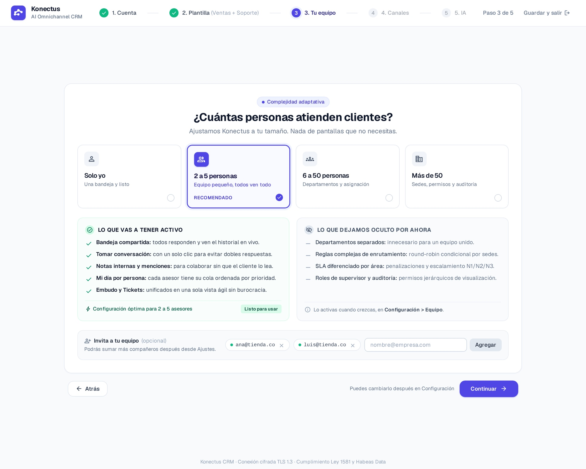
En el onboarding, "¿Cuántas personas atienden?" decide qué se muestra.
Tamaño
Qué se activa
Solo yo
Bandeja, Mi día y respuestas rápidas
2 a 5
Tomar conversación, notas internas y menciones. Sin departamentos.
6 a 50
Departamentos, asignación automática, tiempos de respuesta por área y supervisores
Más de 50
Sedes, permisos detallados, auditoría y acceso único (SSO)
KonectusPropuesta
03 · Propuesta
Seis promesas, medibles en cada pantalla
Fácil de usar
Todo se hace desde la conversación. Un agente nuevo atiende en menos de 10 minutos.
Fácil de configurar
Se elige una plantilla, o se configura conversando con la IA. Primer mensaje en menos de 15 minutos.
Fácil de escalar
Módulos, usuarios y canales se activan con un interruptor, en menos de 1 minuto.
Sin costos ocultos
Calculadora pública, medidor de consumo, tope de gasto y sin permanencia.
Fácil de entender
Cada número dice qué hacer. La IA explica lo que hizo.
AI-native, con IA opcional
Funciona completo sin IA. Con IA, puede operar casi sola.
KonectusPropuesta
04
Cómo funcionaría
El recorrido completo de una empresa: desde que conoce Konectus hasta su operación diaria. Haz clic en cualquier captura para verla en tamaño completo.
KonectusCómo funcionaría
04 · Cómo funcionaría
1Conoce el precio exacto y crea su cuenta
Precios: calculadora con total visible, tarifa de Meta sin recargo, sin permanencia.Registro: 14 días gratis, sin tarjeta de crédito.
KonectusCómo funcionaría
04 · Cómo funcionaría
2Configura su espacio en 5 pasos
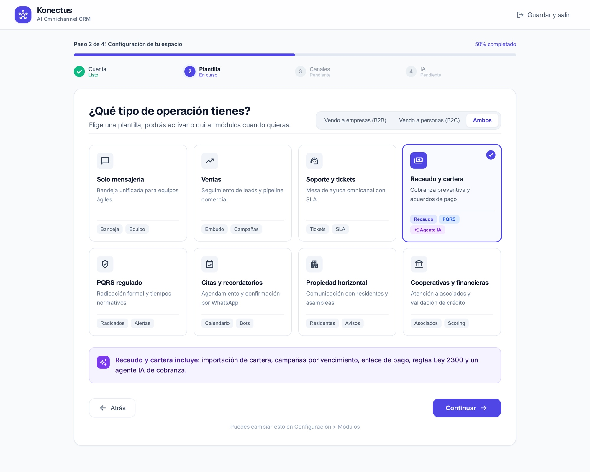
Plantilla: B2B, B2C o ambos, y su tipo de operación.Equipo: cuántas personas atienden.
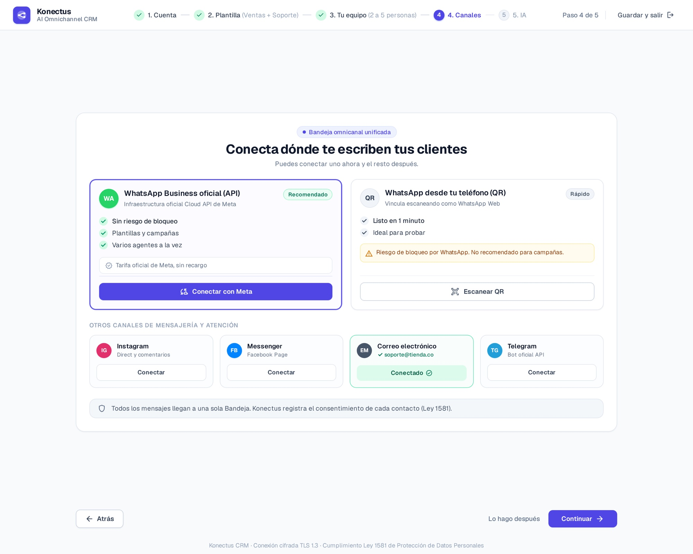
Canales: WhatsApp oficial recomendado y riesgo del QR explicado.IA: nivel, documentos de su negocio y tope de gasto.
KonectusCómo funcionaría
04 · Cómo funcionaría
2b…o la configura conversando con la IA
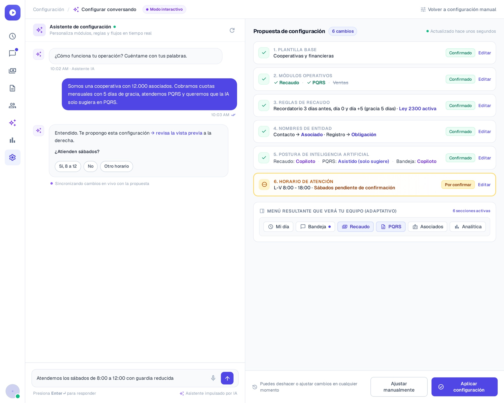
La empresa describe cómo trabaja: "Somos una cooperativa con 12.000 asociados, cobramos cuotas con 5 días de gracia…"
La IA propone plantilla, módulos, reglas, nombres y niveles de IA, con una vista previa antes de aplicar.
Todo se puede ajustar a mano o deshacer.
KonectusCómo funcionaría
04 · Cómo funcionaría
3Cada persona abre "Mi día" y sabe qué hacer
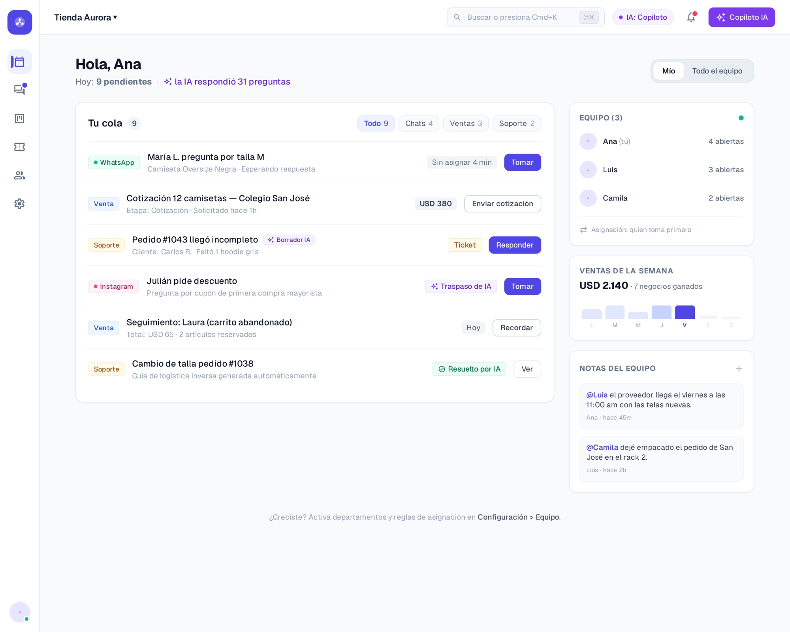
Pyme de 3 personas: ventas y soporte en una sola cola.Con IA en Copiloto: borradores, traspasos y aprobaciones listos.Sin IA: la misma cola, ordenada por reglas y tiempos de respuesta.
KonectusCómo funcionaría
04 · Cómo funcionaría
4Atiende sin perder contexto
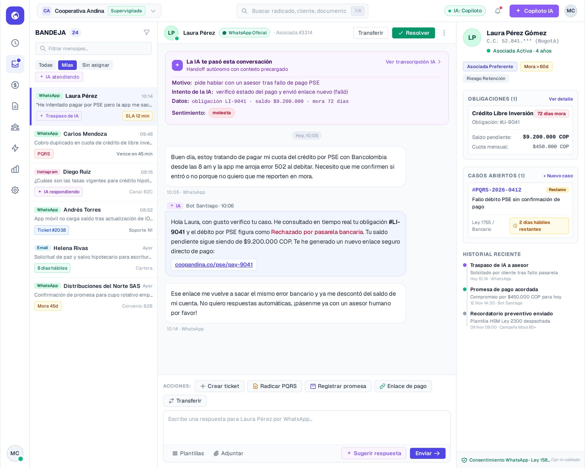
Cuando la IA no puede resolver, entrega el caso con contexto: motivo, lo que intentó, datos clave y estado de ánimo del cliente.
Desde el mismo chat se crea un ticket, se radica una PQRS, se registra una promesa de pago o se envía un enlace de pago.
A la derecha, la ficha del cliente y el consentimiento de datos.
KonectusCómo funcionaría
04 · Cómo funcionaría
5Vende con un embudo claro
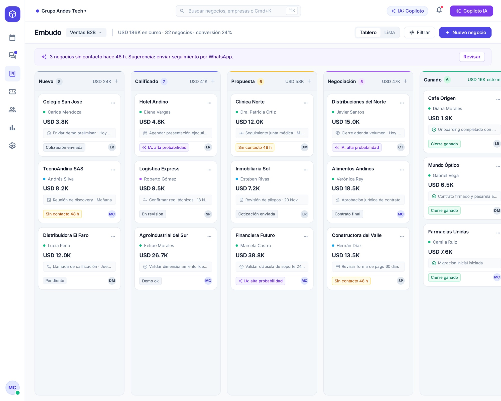
La IA avisa qué negocios se están enfriando y cuáles tienen alta probabilidad. Sin IA, el embudo funciona igual.
KonectusCómo funcionaría
04 · Cómo funcionaría
6Activa el módulo de su nicho: Recaudo
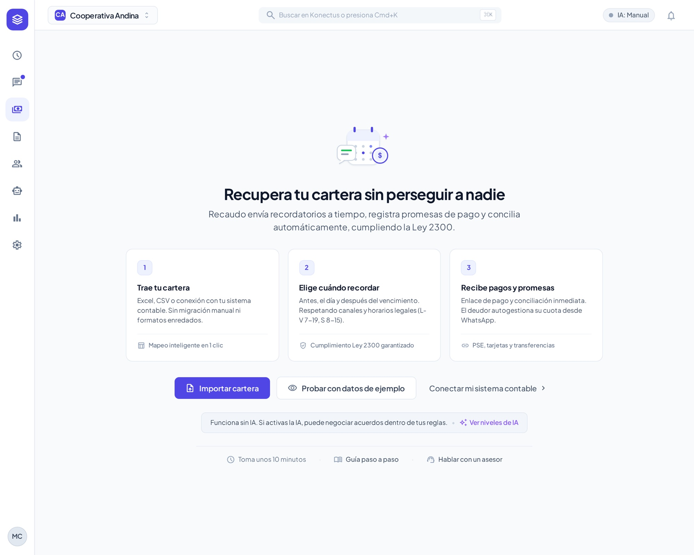
Primer uso: qué es y cómo empezar.
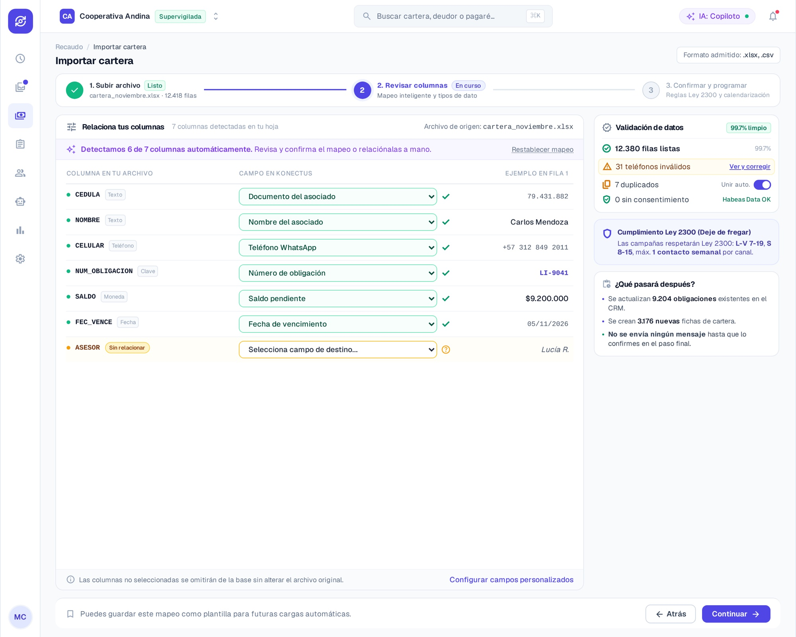
Importar cartera: Excel o CSV, columnas sugeridas por la IA o a mano.Panel: lo recuperado, promesas de pago y cumplimiento de la Ley 2300.
KonectusCómo funcionaría
04 · Cómo funcionaría
7Responde PQRS dentro del plazo legal
Lista: plazos en días hábiles y riesgo legal a la vista.Detalle: reloj legal, borrador de la IA con fuentes, aprobación humana y expediente.
KonectusCómo funcionaría
04 · Cómo funcionaría
8Controla todo sin depender de nadie
Módulos: activar, nivel de IA y precio por módulo.
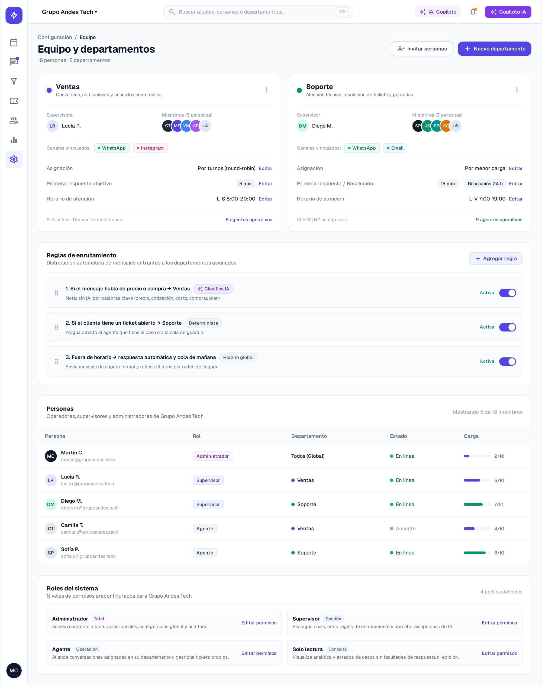
Equipo: departamentos, reglas de asignación y roles.
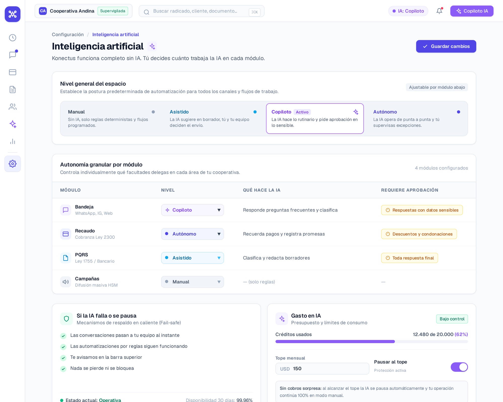
IA: nivel por módulo y qué pasa si falla.Facturación: desglose, proyección y tope.
KonectusCómo funcionaría
04 · Cómo funcionaría
9También desde el celular
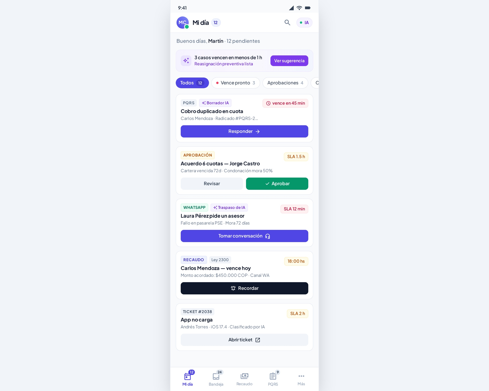
Mi día en el celular.Bandeja en el celular.
Para el equipo que atiende en movimiento
Las mismas colas y acciones, con la IA ayudando a responder.
Las tareas pendientes, los traspasos y las aprobaciones se resuelven con un toque.
KonectusCómo funcionaría
Cómo llegamos
Qué construir, en orden
0–3 meses
Frenar los frentes que no sumen
Base modular y registro genérico con etapas
Menú dinámico según módulos
Lanzar el núcleo en autoservicio
3 a 5 pilotos de cooperativas y recaudo
3–6 meses
Módulo PQRS con plazos legales
Agente IA de cobranza con aprobaciones
Importación y automatizaciones por fecha
Medios de pago locales
6–18 meses
Multi-cliente para BPO y agencias
VoIP con transcripción
México, Perú, Ecuador, Chile y Brasil
Plantillas legales por país
10
clientes pagando antes de expandir a la región
<5%
de bajas al mes
1
caso con retorno demostrado (% de cartera recuperada)
KonectusHoja de ruta
Cómo llegamos
Riesgos y cómo evitarlos
Riesgo
Cómo lo evitamos
Querer abarcar todo a la vez
Un núcleo y un nicho primero. Frenar lo que no sume.
No conseguir clientes pagando pronto
Pilotos pagados en 90 días, aunque sea a precio de lanzamiento.
Distribución
Socios que revenden con su marca y contenido por nicho.
Estabilidad y bloqueos de número
WhatsApp oficial por defecto; QR solo con aviso claro.
Costo de la IA
Medidor por acción, tope de gasto y nivel por módulo.
Base de datos actual
Registro genérico con etapas antes de vender nichos.
KonectusRiesgos
Próximos pasos
90 días para demostrarlo
Acordar el foco: núcleo en autoservicio + nicho de cooperativas y recaudo.
Llevar el nuevo diseño y "Mi día" al producto.
Construir la base modular y el registro genérico.
Firmar de 3 a 5 pilotos y medir el retorno.
KonectusGracias
Anexo A · Flujo de pantallas (1/3)
Descubrir, registrarse y configurar
1.1 Precios1.2 Registro2.2 Plantilla2.3 Tu equipo2.4 Canales2.5 Nivel de IA2.6 Configurar conversando3.1 Mi día pyme3.2 Mi día con IA3.3 Mi día sin IA
KonectusAnexo
Anexo A · Flujo de pantallas (2/3)
Operación diaria, nichos y configuración
3.4 Recaudo primer uso4.1 Bandeja4.2 Embudo5.1 Importar cartera5.2 Panel de recaudo5.3 Lista de PQRS5.4 Detalle de PQRS
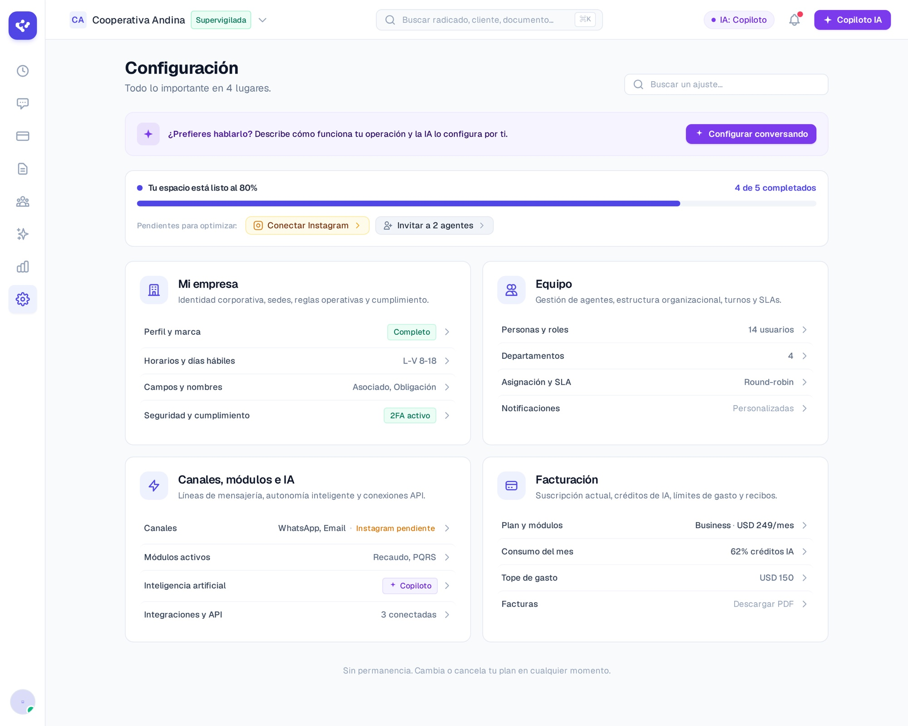
7.1 Configuración7.2 Equipo7.3 Módulos
KonectusAnexo
Anexo A · Flujo de pantallas (3/3)
Control, móvil y volver a entrar
7.4 Inteligencia artificial7.5 Facturación8.1 Mi día móvil8.2 Bandeja móvil
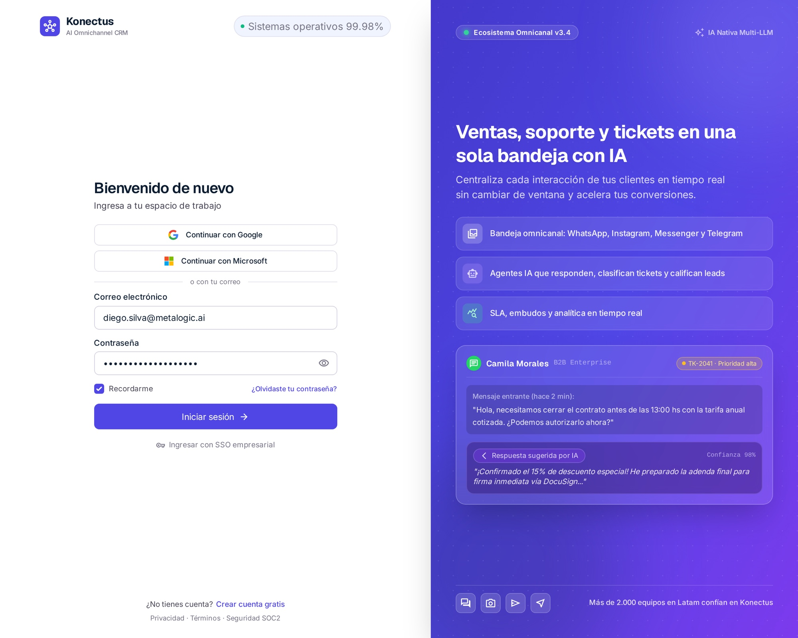
9.1 Iniciar sesión
Pantallas de referencia con el menú anterior, disponibles en el proyecto de diseño: 4.3 Tickets, 4.4 Contactos, 4.5 Ficha 360, 4.6 Analítica, 6.1 Agentes IA, 6.2 Aprobaciones, 6.3 Constructor de flujos, 7.6 Soporte.
KonectusAnexo
Anexo B · Índice de pantallas
Orden oficial con IDs del proyecto de diseño
#
Pantalla
ID
1.1
Precios
ae59ef2195c84b1592c47d2ed1cba20e
1.2
Registro
0e254725f2af49418a32ce00ad5827ba
2.2
Plantilla
bca6da7e15ac49cf91faebb6a2d03377
2.3
Tu equipo
74f101cef35149588cddc3af4c5e16a7
2.4
Canales
d021a5e6bda7401281ad5eb3487054d4
2.5
IA
75c5c2c682bd48069ba5968579569ef4
2.6
Configurar conversando
3c1b61fc246a4f44b2e52d522662bae9
3.1
Mi día pyme
7299cc1039d1498c93771eb194ce2ee1
3.2
Mi día con IA
3487279e5ead4555baf395ae096b5954
3.3
Mi día sin IA
00775bf4dcfa4b12bea1bcf96b5e83a1
3.4
Recaudo primer uso
0537496a555f469380cb07b6f3c18abd
4.1
Bandeja
74104e062a804632a085f47189ee376d
4.2
Embudo
97e9eb776a864d128f2eafb58d95bb76
4.3
Tickets (menú anterior)
fc924148e6ed419d9f638e22e5a5d4d0
4.4
Contactos (menú anterior)
2b58a678a65847b28df613cb3e3d7a44
4.5
Ficha 360 (menú anterior)
b0abd15f32aa489da34f6d26146ad52b
#
Pantalla
ID
4.6
Analítica (menú anterior)
52cd974a1562430ea8303c904be47174
5.1
Importar cartera
ef78354cc7ab4cafbb291c92ee75b54d
5.2
Panel de recaudo
8c6dbc270306468e9c8e14907c29eeae
5.3
Lista de PQRS
f73c513176ec42a3b9522e41da630bdf
5.4
Detalle de PQRS
bb0b82dc58154dc19d80a9548beccddd
6.1
Agentes IA (menú anterior)
e98f1d3cd21c4c5ca7a13ad877a02a82
6.2
Aprobaciones (menú anterior)
58e99eb3631840a2815edfc55e77f5be
6.3
Constructor (menú anterior)
b6fa5724fe00460ea55ed24ace094372
7.1
Configuración
99cd2c15dc6c4d85b798c904276d11f9
7.2
Equipo y departamentos
9d80e537835c45f9a5b228dc6cc75988
7.3
Módulos
6f48cd751a914e67965f78c0f256b3ae
7.4
Inteligencia artificial
89a09a5e139f48d9af54b8d8fb82d4e5
7.5
Facturación
f9ea1c8d303142dd8f7ccfe393b4114a
7.6
Soporte (menú anterior)
23a18ced7c22410a97fa04df4c611e5e
8.1
Mi día móvil
496e68a19cc64d60a7621159d5728080
8.2
Bandeja móvil
a06c96fb71fb4034b8c79808df58b75e
9.1
Iniciar sesión
a9c8d76fac0e443cb4162baa28e834cf
KonectusAnexo
← → para navegar · clic en una captura para ampliarla · P para imprimir